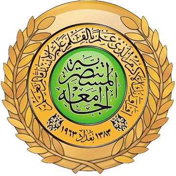
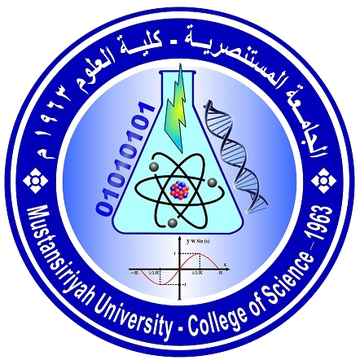

كلية العلوم والجامعة المستنصرية
تعرّف على الجامعة العريقة التي تنتمي إليها، وعلى كلية العلوم وأقسامها العلمية.

الجامعة المستنصريةجامعة بجذور تمتد ثمانية قرون
تحمل الجامعة اسم المدرسة المستنصرية التي أنشأها الخليفة العباسي المستنصر بالله في بغداد سنة 1227م (اكتمل بناؤها نحو 1233م)، وكانت من أقدم الجامعات في العالم، تُدرَّس فيها علوم الدين واللغة والطب والرياضيات والفلك.
أما الجامعة المستنصرية الحديثة فقد تأسست عام 1963م، وتضم اليوم كليات متعددة، منها: الطب، وطب الأسنان، والصيدلة، والهندسة، والعلوم، والقانون، والآداب، والتربية، والإدارة والاقتصاد، والعلوم السياسية، والتربية الأساسية، والتربية البدنية، والعلوم السياحية، والتمريض.

كلية العلومكلية العلوم
كلية العلوم من الكليات العلمية العريقة في الجامعة، وتعود بداياتها إلى السنوات الأولى للجامعة الحديثة؛ فقسم الرياضيات مثلاً تأسس عام 1963 ضمن الكلية. تهتم الكلية بالعلوم الأساسية والتطبيقية، وتجمع بين الدراسة النظرية والمختبرات والبحث العلمي، وتقدّم الدراسات الأولية والعليا.
الأقسام العلمية في كلية العلوم
قسم الرياضيات
الرياضيات البحتة والتطبيقية والإحصاء وبحوث العمليات.
قسم الفيزياء
الفيزياء النظرية والتطبيقية والإلكترونيات والليزر.
قسم الكيمياء
الكيمياء العضوية واللاعضوية والتحليلية والحياتية.
قسم علوم الحياة
الأحياء المجهرية والتقانة الحياتية والوراثة.
قسم علوم الجو
الأرصاد الجوية والمناخ والتنبؤ بالطقس.